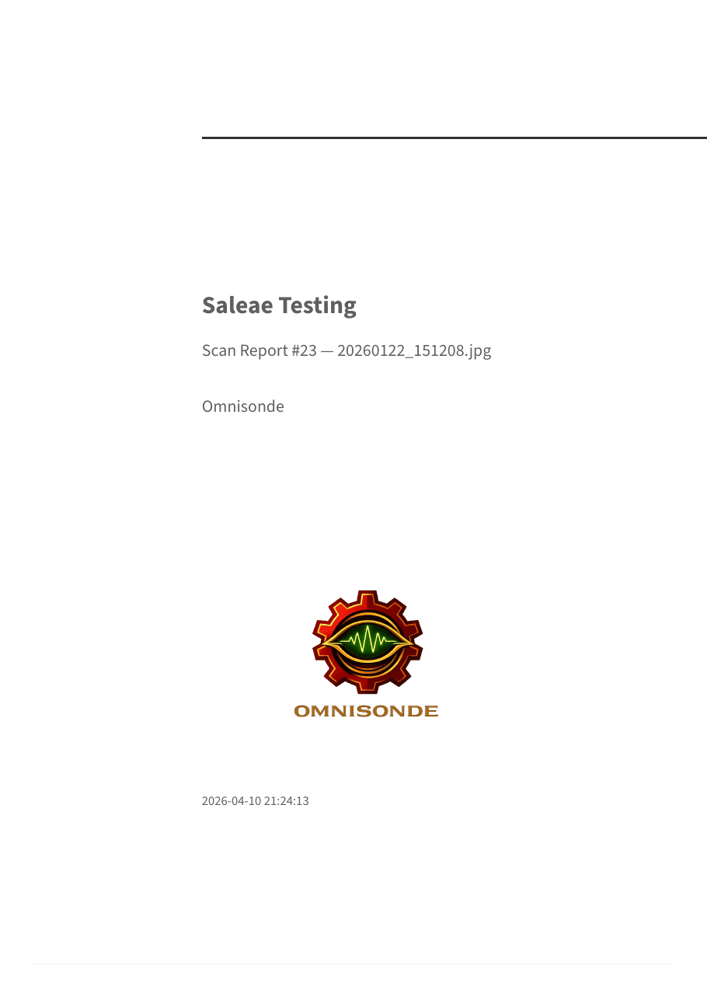
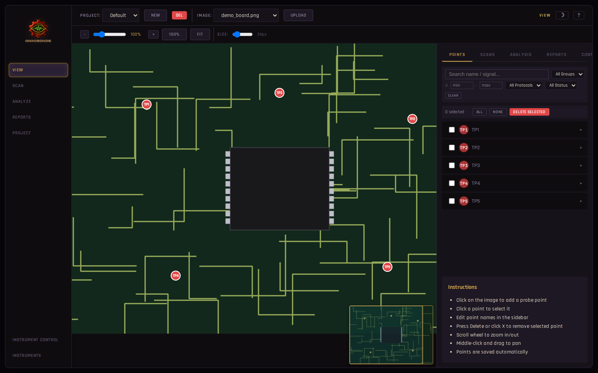
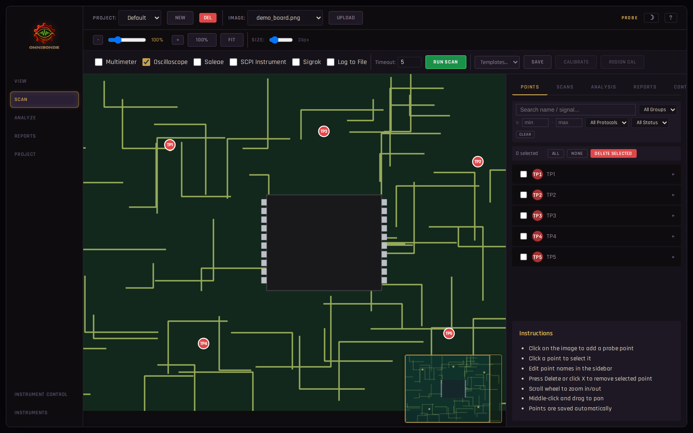
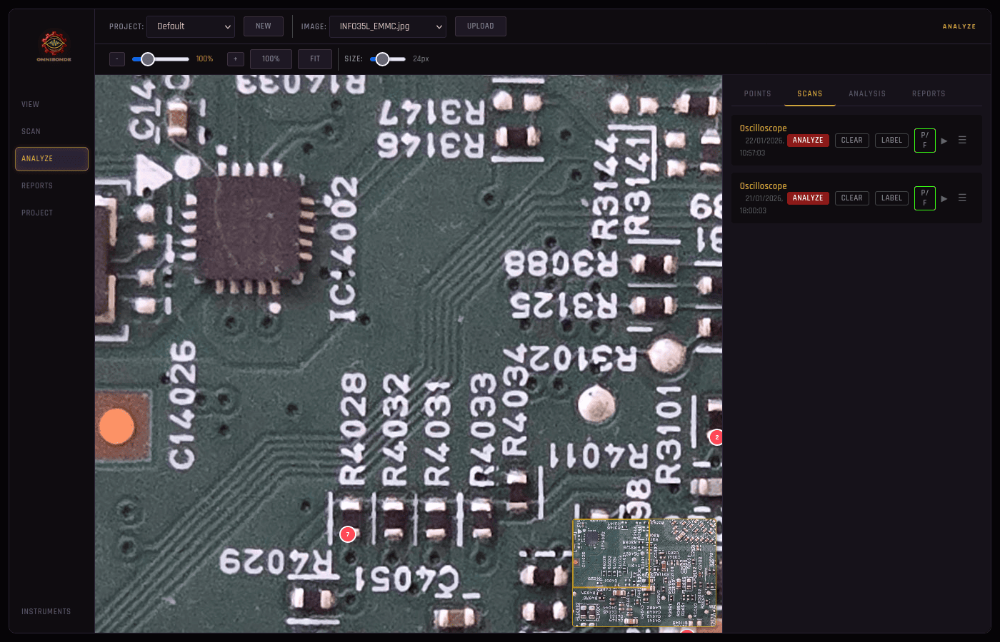
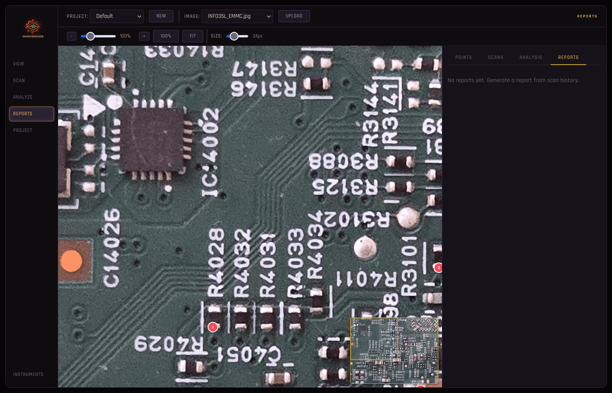

Omnisonde automates captures, correlates instruments, and generates replayable reports from one bench console.
Connect instruments, define probes, run synchronized sessions, and archive the result for reliable comparison.
Bench work is still split across instrument UIs, screenshots, notes, and one-off scripts.
One session definition coordinates instruments, capture phases, annotations, and report output.
Bring your own bench. Omnisonde drives your instruments and preserves the full session context.
Snap a photo of the PCB and drop it into the project. Resolution-independent coordinates work on any image.
Click each test pad, IC pin, or via. Annotate signal names, expected voltages, and per-point trigger settings.
Hit run. Instruments arm, power cycles, and captures save automatically with retries, hooks, and live status.
Voltage domains cluster automatically. UART and eMMC buses are decoded. Export to Markdown, HTML, or PDF.
Reports turn each session into something reviewable, shareable, and repeatable.
Auto-generated from a probe session with summary, instrumentation, waveform crops, anomaly callouts, and timeline context.
Open report preview
Integrations support one workflow: synchronized capture, analysis, and reproducible output.
PyVISA-driven oscilloscopes, Saleae Logic, sigrok-cli logic analyzers, multimeters, and any SCPI instrument — composable, all at once.
Per-point DC readings overlay the PCB image and auto-cluster into standard rails — GND, 1.0V, 1.8V, 3.3V, 5V, 12V — with anomaly highlighting.
UART baud detection, eMMC identification, and signal classification from raw oscilloscope binaries.
Optional GRBL motion integration with 3-point affine calibration mapping image coordinates to physical millimeters. Jog the probe from the browser; full autonomous probe sequencing is on the roadmap.
Add a Python file to the plugins directory and your new instrument is registered at runtime. Hooks let you inject custom logic at any scan phase.
Generate Markdown, HTML, or PDF reports with crops, anomaly summaries, settings, and PulseView-compatible exports.
For teams that care about rigor, not just capture volume.
A single dark console with sidebar navigation. No build steps, no cloud dependency — runs locally next to your instruments.




Spot behavioral drift between revisions without rebuilding the workflow.
Run the same scope, logic analyzer, and power sequence against the same probe map.
Replay the workflow with a new firmware build or hardware spin.
Spot missing SPI transactions, boot timing shifts, CAN drift, or altered UART output.
Plugins and hooks are auto-discovered Python files. Drop one into the right directory and it's registered at runtime — no manifests, no plumbing.
from abc import ABC, abstractmethod
from dataclasses import dataclass, field
@dataclass
class PluginResult:
plugin_name: str
screenshot_path: str | None = None
waveform_path: str | None = None
extra_files: dict[str, str] = field(default_factory=dict)
measurements: dict[str, float | None] = field(default_factory=dict)
@dataclass
class PluginError:
plugin_name: str
phase: str # 'prepare', 'capture', 'save'
error_type: str # 'timeout', 'connection', 'instrument', 'unknown'
message: str
recoverable: bool = True
class ScanPlugin(ABC):
name: str = ""
display_name: str = ""
requires_power_supply: bool = True
@abstractmethod
def __init__(self, config: dict) -> None:
"""Receive plugin's config section from config.json instruments.<name>."""
...
@abstractmethod
def prepare(self, point: dict, output_dir: str) -> None:
"""Before power-on: arm trigger, configure capture, etc."""
...
@abstractmethod
def capture(self, point: dict, output_dir: str) -> None:
"""After power-on + timeout: stop acquisition, wait for capture, etc."""
...
@abstractmethod
def save(self, point: dict, output_dir: str) -> PluginResult:
"""Export data to files in output_dir. Return paths."""
...
def reconnect(self) -> None:
"""Attempt to re-establish instrument connection. Override if applicable."""
pass
@abstractmethod
def close(self) -> None:
"""Release instrument resources at session end."""
...
"""
Example hook that logs point information to a file.
Demonstrates the ScanHook interface with minimal complexity.
"""
import os
from datetime import datetime
from hooks.base import ScanHook, HookResult
class LogHook(ScanHook):
"""Writes a log entry for each probed point."""
name = "log"
display_name = "Log to File"
def __init__(self, config: dict) -> None:
self.log_file = config.get("log_file", "scan_hook_log.txt")
def before_power_on(self, point: dict, output_dir: str) -> HookResult | None:
path = os.path.join(output_dir, self.log_file)
with open(path, "a") as f:
ts = datetime.now().isoformat()
f.write(f"[{ts}] BEFORE_POWER_ON point={point['name']} "
f"x={point.get('x', '?')} y={point.get('y', '?')}\n")
return HookResult(hook_name=self.name, success=True)
def after_capture(self, point: dict, output_dir: str) -> HookResult | None:
path = os.path.join(output_dir, self.log_file)
with open(path, "a") as f:
ts = datetime.now().isoformat()
f.write(f"[{ts}] AFTER_CAPTURE point={point['name']}\n")
return HookResult(hook_name=self.name, success=True)
Extending the same workflow into more automation, better comparison, and stronger team collaboration.
Get in touch to discuss licensing, on-site deployment, or custom instrument integrations for your hardware program.
contact@omnisonde.com